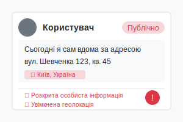
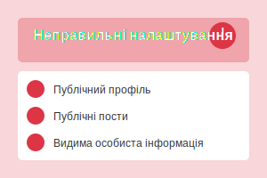
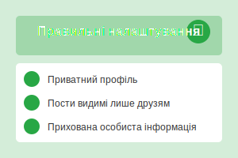
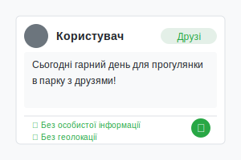
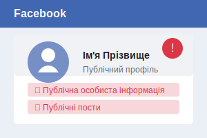
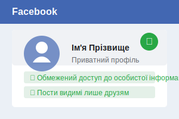
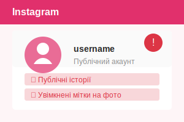
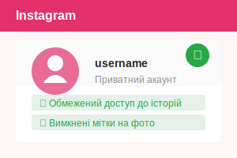
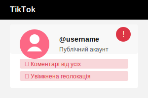
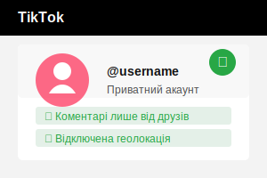

Нарешті відпустка! Їду на два тижні до Єгипту. Наша адреса буде: готель "Сонячний берег", кімната 507. Якщо хтось хоче зв'язатися, мій номер: +380991234567. Також залишаю ключі від квартири сусідці з 3-го поверху.

Професійний гід з кібербезпеки
Безпека в соціальних мережах
Комплексний ресурс про безпечне використання соціальних мереж, захист персональних даних та протидію кіберзагрозам для сучасних користувачів
12+
Розділів безпеки
50+
Практичних порад
100%
Актуальна інформація
Експертні поради
Практичні приклади
Інтерактивний квіз
Панель безпеки
Захищено
98%
Надійність паролів
Активна
Двофакторна автентифікація
Приватний
Статус профілю
Основи безпеки онлайн
Ключові принципи безпечного використання соціальних мереж
Надійні паролі
Створюйте складні паролі, які містять літери, цифри та спеціальні символи. Не використовуйте один пароль для всіх акаунтів.
Приватність профілю
Налаштуйте параметри приватності так, щоб ваша особиста інформація була доступна лише довіреним особам.
Обережне поширення
Будьте обережні з тим, що ви публікуєте. Інформація в інтернеті може залишитися назавжди, навіть якщо ви її видалите.
Перевірка контактів
Додавайте в друзі лише тих, кого ви знаєте. Будьте обережні з незнайомцями, які надсилають запити на дружбу.
Розпізнавання загроз
Навчіться розпізнавати фішинг, шахрайство та інші онлайн-загрози. Не відкривайте підозрілі посилання.
Геолокація
Будьте обережні з публікаціями, які розкривають ваше місцезнаходження. Вимкніть автоматичне додавання геолокації до постів.
Управління часом
Встановлюйте обмеження часу використання соціальних мереж. Використовуйте спеціальні додатки для відстеження та оптимізації часу онлайн.
Фільтрація коментарів
Використовуйте налаштування фільтрації коментарів, щоб блокувати образливі слова та захистити себе від кібербулінгу.
Двофакторна автентифікація
Увімкніть двофакторну автентифікацію для додаткового захисту вашого облікового запису від несанкціонованого доступу.
Прихована активність
Використовуйте функції приховування вашої активності, статусу онлайн та переглянутих історій від сторонніх користувачів.
Захист від соціальної інженерії
Розпізнавайте спроби маніпуляцій через соціальні мережі: підроблені профілі, провокативні повідомлення та запити на конфіденційну інформацію.
Управління персональними даними
Регулярно переглядайте та видаляйте непотрібні дані, контролюйте, які додатки мають доступ до ваших акаунтів.
Безпека мережевих з'єднань
Уникайте входу в соціальні мережі через публічні Wi-Fi мережі. Використовуйте VPN для додаткового захисту трафіку.
Розпізнавання ботів та фейків
Навчіться ідентифікувати автоматизовані акаунти, фейкові профілі та маніпулятивний контент у соціальних мережах.
Актуальна статистика кіберзагроз 2024
Дані про поточний стан кібербезпеки в соціальних мережах
4.8 млрд
Користувачів соціальних мереж у світі
+4.2% за рік
73%
Кіберзлочинів починаються з соціальних мереж
+12% за рік
1 з 5
Користувачів стали жертвами фішингу
+8% за рік
45%
Користувачів використовують слабкі паролі
-3% за рік
Топ-5 загроз 2024 року
1
AI-генеровані фейки
Використання штучного інтелекту для створення реалістичних фейкових профілів та контенту
2
Квішинг (QR-фішинг)
Шахрайські QR-коди в постах та історіях для крадіжки даних
3
Криптошахрайство
Фальшиві інвестиційні схеми та розіграші криптовалют
4
Романтичне шахрайство
Створення фальшивих романтичних стосунків для фінансових махінацій
5
Викрадення акаунтів
Масове захоплення акаунтів через слабкі паролі та відсутність 2FA
Практичні приклади кіберзагроз
Фішинг через DM
Приклад повідомлення:
Ознаки загрози: Терміновість, підозріле посилання, запит на дії
Правильна реакція: Не переходити за посиланням, перевірити через офіційні канали
Соціальна інженерія
Приклад ситуації:
Ознаки загрози: Швидке встановлення довіри, фінансові запити
Правильна реакція: Перевірити особу через інші канали зв'язку
Підозрілий бот
Ознаки бота:
- Профіль створений недавно
- Мало оригінального контенту
- Повторювані коментарі
- Підозрілі посилання в біо
Правильна реакція: Заблокувати, поскаржитися на спам
Інтерактивні приклади
Порівняйте правильні та неправильні налаштування профілю
Неправильно

- Публічний профіль
- Публічні пости
- Публічні фото
- Видимий номер телефону
- Видима електронна пошта
- Видима адреса
Такі налаштування роблять всю вашу особисту інформацію доступною для будь-кого в інтернеті, що може призвести до крадіжки особистих даних або переслідування.
Правильно

- Приватний профіль
- Пости видимі лише друзям
- Фото видимі лише друзям
- Прихований номер телефону
- Прихована електронна пошта
- Прихована адреса
Ці налаштування обмежують доступ до вашої особистої інформації, дозволяючи бачити її лише тим, кому ви довіряєте.
Неправильно
Іван Петренко, 28 років
IT-спеціаліст, ТОВ "Технології"
м. Київ, вул. Шевченка, 45, кв. 12
Тел: +380991234567
Email: ivan.petrenko@gmail.com
Цей профіль містить забагато особистої інформації, включаючи повне ім'я, вік, місце роботи, домашню адресу, телефон та електронну пошту. Така відкритість може призвести до витоку даних, соціальної інженерії та інших серйозних проблем з безпекою.
Правильно
Іван П.
IT-спеціаліст
м. Київ
Контакти: доступні лише для друзів
Цей профіль містить обмежену особисту інформацію, використовуючи лише ім'я та першу літеру прізвища, загальну інформацію про професію та місто. Контактна інформація прихована від сторонніх осіб, що значно підвищує рівень захисту від цільових атак.
Неправильно
Іван Петренко
Вчора о 15:30 ·
Ця публікація розкриває забагато особистої інформації: точні дати відсутності вдома, місце перебування, номер кімнати, контактний телефон та інформацію про доступ до житла. Така інформація може бути використана для соціальної інженерії, фізичного злому та інших типів атак.
Правильно
Іван П.
Вчора о 15:30 ·
Радий, що скоро відпочинок! Буду насолоджуватися відпусткою та ділитися враженнями після повернення.
Ця публікація не розкриває конкретних деталей про відпустку, не вказує точні дати відсутності вдома та місце перебування. Пост видимий лише для друзів, а не для всіх користувачів, що зменшує ризик використання цієї інформації зловмисниками для таргетованих атак.
Небезпечні налаштування Facebook

- Публічний профіль
- Публічний список друзів
- Публічні фотоальбоми
- Дозвіл на позначення вас у публікаціях
- Дозвіл на пошук за номером телефону
- Дозвіл на пошук за електронною поштою
- Двофакторна автентифікація вимкнена
Ці налаштування Facebook роблять ваш профіль вразливим. Публічний доступ до особистої інформації, дозвіл на позначення вас у публікаціях без вашого схвалення та можливість пошуку вашого профілю за контактними даними створюють ризики для вашої приватності.
Безпечні налаштування Facebook

- Приватний профіль (видимий лише друзям)
- Прихований список друзів
- Фотоальбоми видимі лише друзям
- Перегляд позначень перед публікацією
- Заборона пошуку за номером телефону
- Заборона пошуку за електронною поштою
- Двофакторна автентифікація увімкнена
Ці налаштування Facebook забезпечують надійний захист вашої приватності. Обмеження видимості профілю, контроль над позначеннями, заборона пошуку за контактними даними та двофакторна автентифікація значно підвищують безпеку вашого облікового запису.
Небезпечні налаштування Instagram

- Публічний акаунт
- Показ активності (був/була в мережі)
- Дозвіл на повідомлення від усіх
- Автоматичне збереження історій
- Дозвіл на репости ваших історій
- Фільтри коментарів вимкнені
- Двофакторна автентифікація вимкнена
Ці налаштування Instagram не забезпечують належного захисту вашої приватності. Публічний акаунт, видимість вашої активності, можливість отримання повідомлень від незнайомців та відсутність фільтрації коментарів створюють ризики для вашої безпеки.
Безпечні налаштування Instagram

- Приватний акаунт
- Приховування активності (був/була в мережі)
- Повідомлення лише від людей, на яких ви підписані
- Вимкнення автоматичного збереження історій
- Заборона репостів ваших історій
- Фільтри коментарів увімкнені
- Двофакторна автентифікація увімкнена
Ці налаштування Instagram забезпечують надійний захист вашої приватності. Приватний акаунт, приховування активності, обмеження повідомлень, контроль над вашими історіями, фільтрація коментарів та двофакторна автентифікація значно підвищують безпеку вашого облікового запису.
Небезпечні налаштування TikTok

- Публічний акаунт
- Дозвіл на завантаження ваших відео
- Дозвіл на дуети з вашими відео
- Дозвіл на коментарі від усіх
- Дозвіл на повідомлення від усіх
- Синхронізація контактів увімкнена
- Обмежений режим вимкнений
- Розширені налаштування приватності вимкнені
Ці налаштування TikTok не забезпечують належного захисту вашої приватності. Публічний акаунт, дозвіл на завантаження та дуети з вашими відео, можливість отримання коментарів та повідомлень від незнайомців створюють ризики для вашої безпеки та можуть призвести до витоку персональних даних або цільових атак.
Безпечні налаштування TikTok

- Приватний акаунт
- Заборона завантаження ваших відео
- Заборона дуетів з вашими відео
- Коментарі лише від друзів
- Повідомлення лише від друзів
- Синхронізація контактів вимкнена
- Обмежений режим увімкнений
- Розширені налаштування приватності увімкнені
Ці налаштування TikTok забезпечують надійний захист вашої приватності. Приватний акаунт, заборона завантаження та дуетів з вашими відео, обмеження коментарів та повідомлень, а також розширені налаштування приватності значно підвищують безпеку вашого облікового запису та захищають від несанкціонованого доступу.
Правильно
Іван П.
Вчора о 15:30 ·
Радий, що скоро відпочинок! Буду насолоджуватися відпусткою та ділитися враженнями після повернення.
Ця публікація не розкриває конкретних деталей про відпустку, не вказує точні дати відсутності вдома та місце перебування. Пост видимий лише для друзів, а не для всіх користувачів.
Перевірте свої знання
Пройдіть тест, щоб оцінити свої знання з безпеки в соціальних мережах та кіберзахисту
Питання 1 з 10
Інтерактивні інструменти безпеки
Практичні інструменти для перевірки та покращення вашої цифрової безпеки
Генератор паролів
Створюйте надійні паролі з налаштуваними параметрами
Натисніть "Генерувати"
Перевірка витоку даних
Дізнайтеся, чи були ваші дані скомпрометовані
Ваша електронна пошта не зберігається і використовується лише для перевірки
Аналізатор приватності
Оцініть рівень приватності ваших соціальних мереж
Перевірка посилань
Перевіряйте підозрілі посилання перед переходом
Ознаки підозрілих посилань:
- Незнайомі домени або скорочені URL
- Орфографічні помилки в адресі
- Підозрілі розширення (.tk, .ml, .ga)
- Посилання з соціальних мереж від незнайомців
Корисні посилання
Професійні ресурси та рекомендації з кібербезпеки в соціальних мережах
Кіберполіція України
Офіційний ресурс Департаменту кіберполіції України з порадами щодо безпеки в інтернеті та соціальних мережах.
Відвідати сайтOWASP
Міжнародна організація, що надає рекомендації з безпеки веб-додатків та соціальних мереж, включаючи захист від соціальної інженерії.
Відвідати сайтCybersecurity & Infrastructure Security Agency
Ресурс з рекомендаціями щодо захисту особистих даних та безпечного використання соціальних мереж.
Відвідати сайтCERT-UA
Команда реагування на комп'ютерні надзвичайні події України, що надає рекомендації з кібербезпеки та інформацію про актуальні загрози.
Відвідати сайтNIST Privacy Framework
Стандарти управління приватністю та персональними даними для організацій та індивідуальних користувачів.
Відвідати сайтElectronic Frontier Foundation
Міжнародна організація з захисту цифрових прав та приватності в інтернеті, включаючи соціальні мережі.
Відвідати сайтPrivacy Tools
Комплексний ресурс з інструментами та рекомендаціями для захисту приватності в цифровому середовищі.
Відвідати сайтЦентр безпеки Facebook
Офіційний ресурс від Facebook з інструкціями щодо налаштування приватності та безпеки.
Відвідати сайтЦентр безпеки Instagram
Офіційний ресурс від Instagram з порадами щодо безпечного використання платформи.
Відвідати сайт